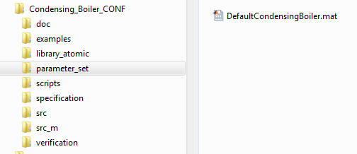
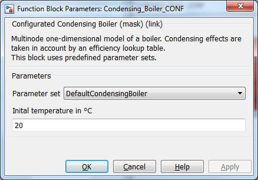

Condensing_Boiler_CONF
Condensing_Boiler_CONF Path: CARNOT/source/boiler
Condensing_Boiler_CONF
Path: CARNOT/source/boiler
Purpose
Model of a boiler with pre-configured parameter sets.
Description
Uses the model
Condensing_Boiler.
Choose the boiler in the pop-up menue and set the initial temperature for your simulation.
Advanced Topics: Creating a new boiler parameter set
The parameters are stored in a structure "B". If you like to create a new boiler, copy a file already defining a boiler and modify the paramters. Than save the structure under the name of your boiler.
B. Qdotnom nominal power of
the boiler in W
B.HeatLoss heat loss coefficient of
the boiler in W/K
B.dplin
pressure drop coefficient linear in massflow in Pa/(kg/s)
B.dpqua
pressure drop coefficient quadratic in massflow in Pa/(kg/s)²
B.Volume volume of
the boiler in m³
B.Nodes
number of nodes
B.TableRelativePower vector with at least 2 elements
defining the relative power for the table data (0..1)
B.TableTemperatures vector with at least 2
elements defining the temperatures for the table data in °C
B.TableData: [2x2 double]
B.ElectricPower electric consumption for the relative power in W
(same number of elements as the TableRelativePower)
B.QdotMin
minimum thermal power in W
B.whichTforEfficiency 1 - efficiency table data is based
on mean temperature (inlet + outlet)/2
2 - efficiency table data is based on inlet temperature
3 - efficiency table data is based on outlet temperature
The structure is saved in the folder "parameter_sets", the file name is used for the pop-up menue of the block:


Characteristics
Direct Feedthrough Yes
Sample
time
Inherited
from driving block
States
corresponding
to the number of nodes
Vectorized
Yes